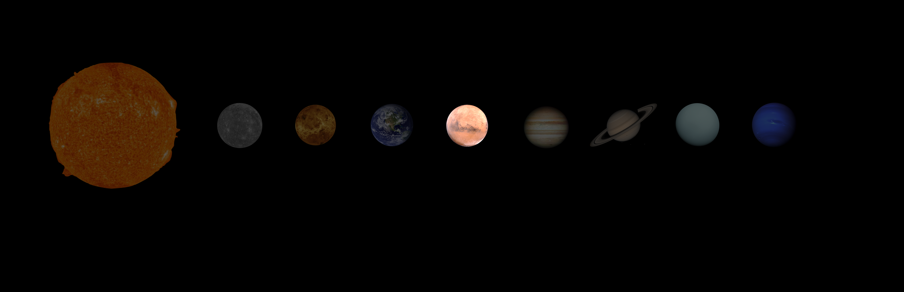
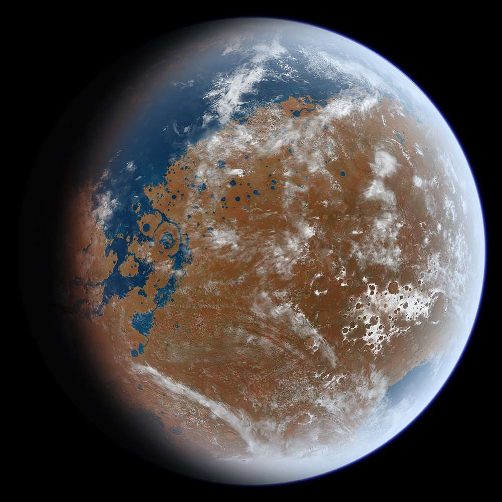

MARS
Mars is the fourth planet from the Sun. It is the second smallest planet in the Solar System, with a dry and barren landscape.
OVERVIEW

Sun — Mercury — Venus — Earth — Mars — Jupiter — Saturn — Uranus — Neptune
- Fourth planet from the Sun. Fourth of the four rocky planets (Mercury, Venus, Earth, Mars)
- Second smallest planet in the Solar System - only about 15% as large as Earth
- Barren landscape - resembles a desert on Earth
- Very thin atmosphere
- Like Earth, Mars has seasons, polar ice caps, volcanoes, canyons, and weather (e.g. dust storms)
- May once have had liquid water oceans just like on Earth
- Known as the "Red Planet" due to iron compounds in the soil (the same responsible for rust on Earth)
- One of the most explored bodies in the Solar System
- Chance for life to survive there
- Click here to open 3D model
FACTS
A WATERY PAST?
Evidence suggests that Mars used to have liquid water (and possibly oceans) flowing on its surface. This means that life of some form may also have existed on Mars at some point within the planet's history.
Today, water on Mars is present in the form of frozen ice caps at the poles. The polar 'ice' is believed to contain a mixture of mainly 'dry ice' (frozen carbon dioxide) and water ice.
IT HAS THE LARGEST VOLCANO IN THE SOLAR SYSTEM
Named Olympus Mons, this volcano is over 21km (13.6 miles) tall! That's approximately 2.5 times the height of Mount Everest above sea level - the tallest mountain here on Earth.
Like all others on the planet's surface, it is an inactive volcano, though whether it is extinct or is simply lying dormant is still uncertain. It could erupt at any time!
THE GOD OF WAR
Mars is named after the Roman god of war. In Roman mythology, Mars was an important military god.
THE RED PLANET
Mars is commonly referred to as the Red Planet because of the presence of iron compounds such as iron oxide in the soil, which give it a reddish-brown tint.
These same compounds are responsible for rust that we see on Earth, where goods made out of iron rust when exposed to oxygen and moisture over time.
PIECES OF MARS EXIST ON EARTH
Every now and then, an impact event such as an asteroid colliding with the Martian surface causes small pieces of rock and debris to get ejected from Mars and enter into interplanetary space (the space between the planets). Some then end up on Earth as a meteorite.
By studying these meteorites, scientists can learn more about the environment on Mars without having to send space missions there.
IT HAS THE LARGEST DUST STORMS IN THE SOLAR SYSTEM
One that occurred between May and September of 2018 was the largest ever recorded and was seen to circle the entire planet!
LIFE ON MARS?
- If there is one place in the Solar System on which the possible existence of life has attracted the most attention and captured people’s imaginations, it is Mars by a mile.
- In the early 20th century, inventor Nikola Tesla claimed to be receiving radio signals coming from Mars. Around the same time, American astronomer Percival Lowell produced intricate drawings depicting "canals" on the Martian surface.
- Since canals are man-made, this popularised the belief at the time that Mars was home to intelligent life forms.
- British author H. G. Wells would go on to write The War of the Worlds, a work of science fiction in which humans on Earth are invaded by alien beings from Mars.
- Second to Earth, Mars is perhaps one of the most hospitable places to life in the Solar System. Its surface largely resembles a desert, with a dry, rocky landscape. It is a cold place as it is further from the Sun than Earth, though temperatures at the equator can reach a high of around 20° C during the summer (Mars has seasons, just like on Earth, owing to the fact that the planet is tilted on its axis) which would be comfortable even to humans. It has an atmosphere containing a very small percentage (0.17%) of oxygen, though it is very thin - too thin for us to breathe.
- Mars also has a similar rotation period to Earth – meaning it takes Mars almost the same amount of time to rotate around its own axis as it does for the Earth, so the length of a day on Mars is similar (just 37 minutes longer) to that on Earth.
- But Mars is no safe haven. Its surface is constantly bombarded by streams of energetic particles emitted from the Sun (known as solar winds). These are deadly to humans because they have the ability to alter the structure of our DNA and can cause cancer.
- Fortunately, Earth has a strong magnetic field surrounding the planet which protects us against these particles, but the magnetic field surrounding Mars is much weaker and cannot offer the same protection. It is believed that solar winds have stripped away the Martian atmosphere over time, which explains why it is so thin today.
- On Earth, our atmosphere also contains an ozone layer which protects us against UV (ultraviolet) rays from the Sun. We can’t see UV rays with our eyes, but they are energetic emissions from the Sun that again have the ability to interfere with our DNA and can cause cancer. Most UV rays that strike the Earth are absorbed by the ozone layer, but a small percentage make it through and still pose a risk to humans, which is why sunscreen needs to be worn while out in the Sun on a hot summer’s day. The lack of a substantial atmosphere on Mars on the other hand provides little to no protection against UV rays.
- Evidence suggests that Mars was once a more hospitable place to life. Like Venus, it may once have had oceans of liquid water flowing on its surface billions of years ago. But as the planet has cooled and its atmosphere has become thinner, the water has frozen into ice and, in small quantities, sublimed to become water vapour in the Martian atmosphere. Sublimation is the process where a solid turns straight into a gas under the right conditions, without needing to exist as a liquid first.
- The image below shows an artist's impression of what water on the surface of an ancient Mars might have looked like:

What ancient mars may have looked like billions of years ago. It's based on MOLA data. The elevations have been updated so the shore lines will closely approximate their ancient locations. Also any mountains less than two billion years old have been removed. Ittiz, CC BY-SA 3.0, via Wikimedia Commons.
- Though there is currently a lack of hard evidence, many scientists believe that life may have existed on Mars at some point in its ancient past. It may even exist there today, in the form of simple microorganisms that could survive in liquid water trapped in rocks or underground.
- One of the best pieces of evidence for the existence of life on Mars in the past is the meteorite ALH84001, discovered in Antarctica during a scientific expedition in the 1980s. Believed to have originated from Mars, there is evidence that ALH84001 contains microscopic residues of bacteria-like life – a sort of “microscopic fossil” which would suggest that such life existed on Mars before ALH84001 left its surface some 16 million years ago.
- If humans were to live on Mars in the future, it would need to be terraformed. Terraforming a planet means changing the conditions on the planet in order to make them more suitable for life. It has been suggested that detonating hydrogen bombs at the poles of Mars could cause the ice there to melt, reintroducing liquid water onto the surface. Greenhouse gases (gases that absorb the sun’s heat and prevent it from escaping into space) could be released to heat up the planet and microorganisms could be deployed onto the surface to start absorbing carbon dioxide in the Martian atmosphere and replacing it with more oxygen. A base for humans could be built and crops could be grown to sustain a future civilisation. Mars is also one of Earth’s closest neighbours, so it could be the best chance we have of colonising another world in our Solar System.
- Achieving a goal such as establishing a colony on Mars seriously pushes the limit of our current technology but does not lie completely outside it. NASA already have plans to send humans to Mars by the 2030s!